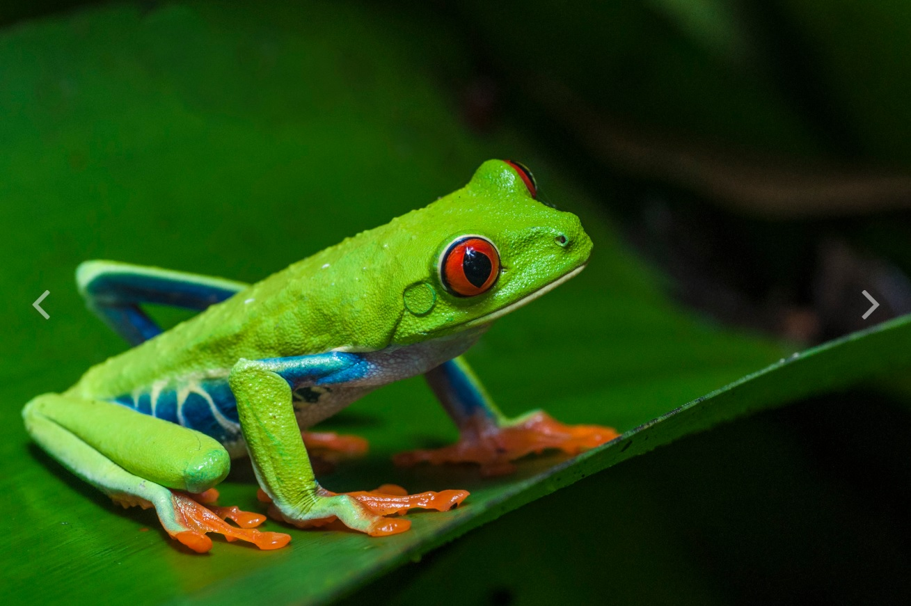

Son un tipo de anfibios caracterizados principalmente por su gran capacidad de salto gracias a la morfología de sus extremidades posteriores, potentes y muy desarrolladas. Los ejemplares más pequeños miden aproximadamente 8 centímetros, mientras que los más grandes pueden alcanzar los 30 centímetros.
Se han descrito unas 6.600 especies, la mayoría de las cuales reparte su vida entre el medio acuático y el terrestre. Se reproducen mediante huevos y se alimentan de pequeños invertebrados.